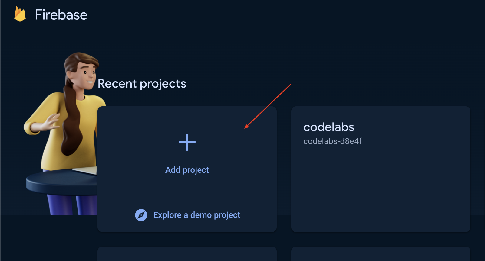
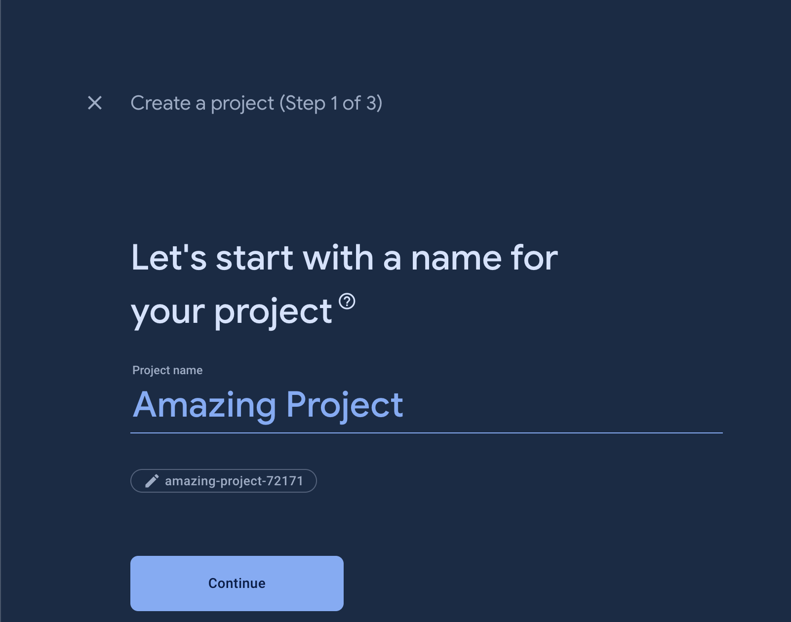
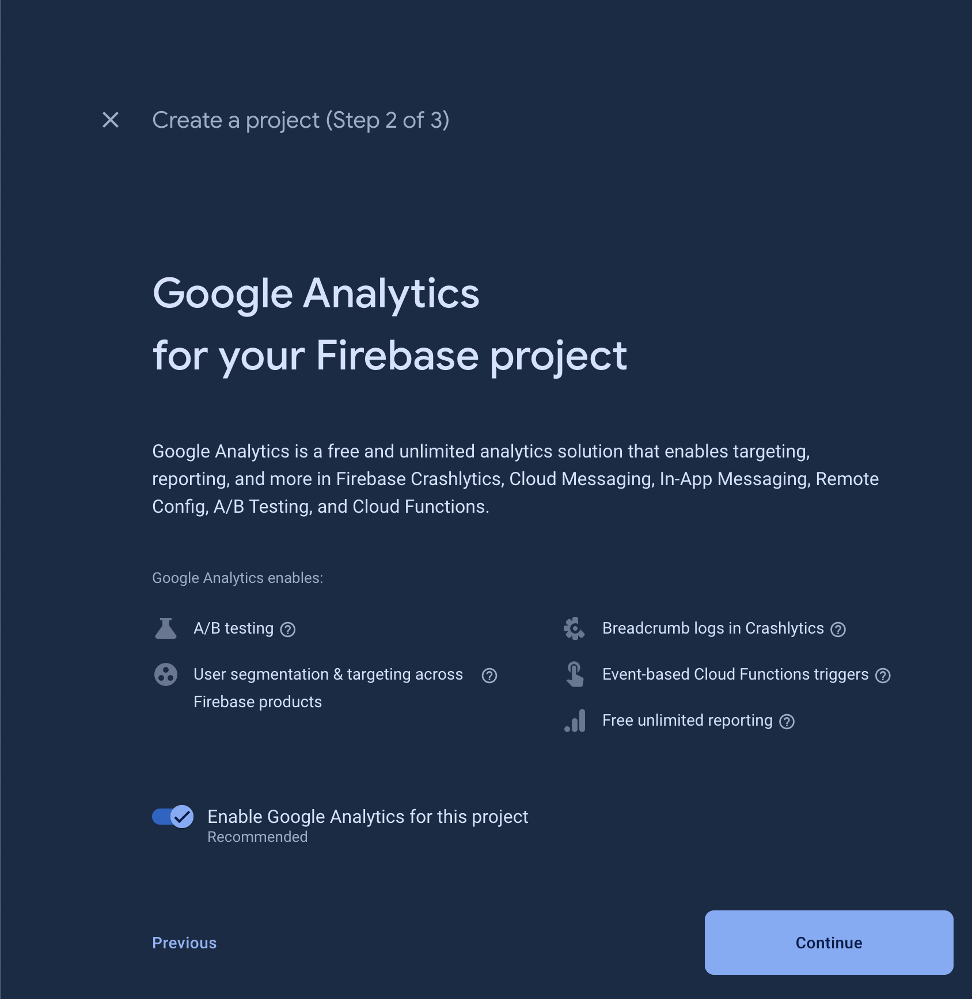
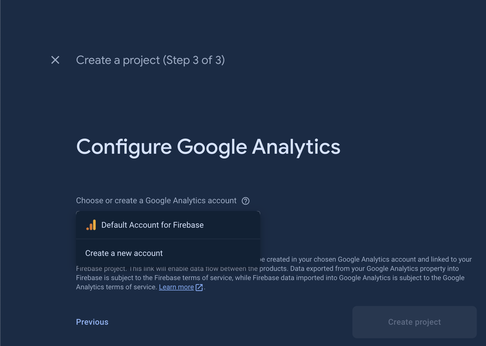
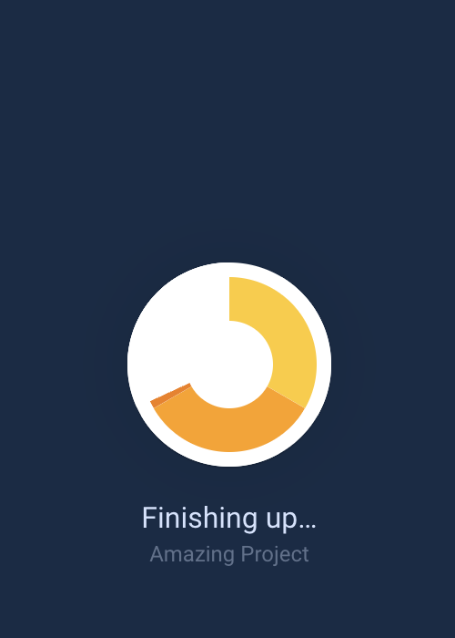
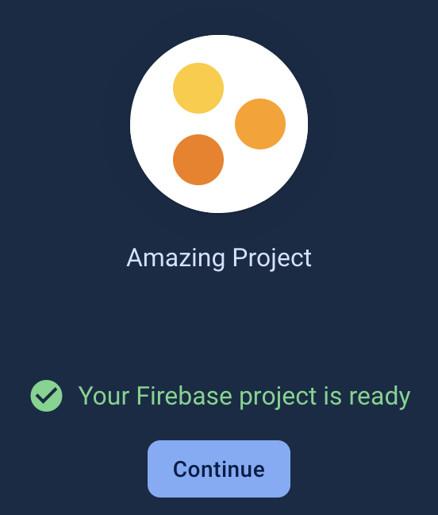
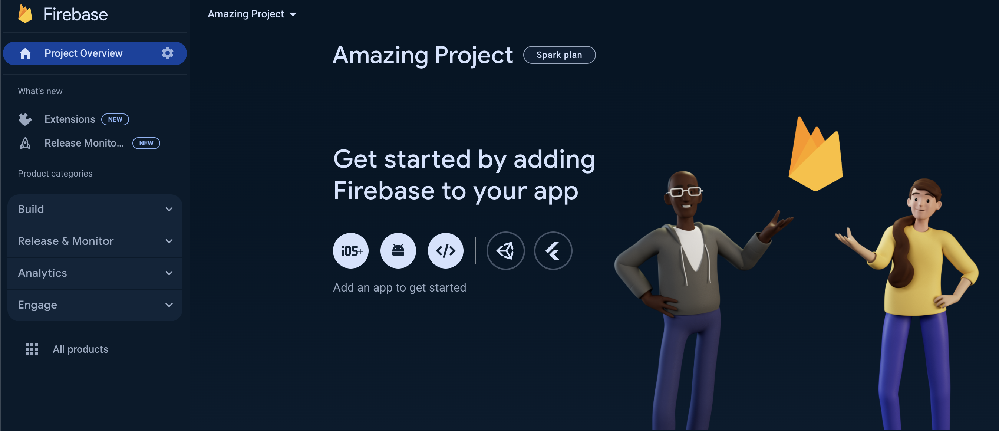

Firebase?Firebase project.Firebase: A Streamlined Development Platform from Google
Firebase is a development platform from Google that streamlines the process of building mobile and web applications. It offers a suite of tools that handle many of the behind-the-scenes tasks, eliminating the need for extensive custom coding. This allows developers to focus their efforts on the core features and functionality that make their app unique.
In essence, Firebase is a comprehensive backend solution.
It provides a set of cloud computing services and application development tools. These services encompass databases, authentication, integration features, and more, all readily available for a variety of application development environments. Firebase supports popular platforms like Android, iOS, JavaScript, Node.js, Java, Unity, PHP, and C++.
Go to console.Google account.In order to use the services of Firebase in your apps, a project is needed.
Google account sign-in, you will redirected to the projects dashboard of Firebase.Add project panel.


Create a new account to create a Google analytics account if you do not have any Google analytics account yet or select Default Account for Firebase if available.
Create Project button. Immediately, Firebase will do provisioning of your project. Please be patient at this stage because the provisioning might take a few minutes to be accomplished.
Continue to proceed to your project dashboard.
Congratulations! You have successfully created a Firebase project, now you are ready to connect Firebase to your apps! 